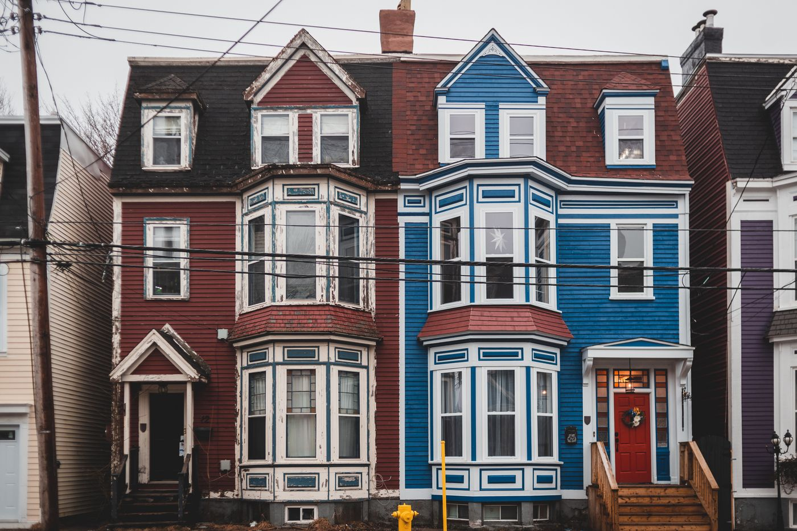
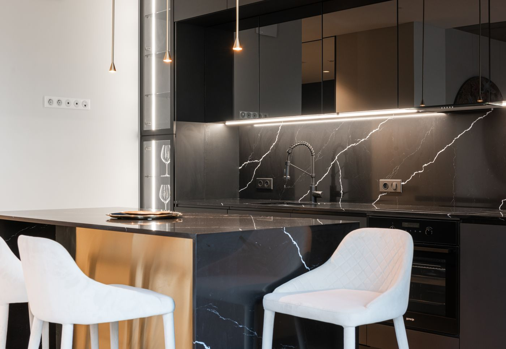
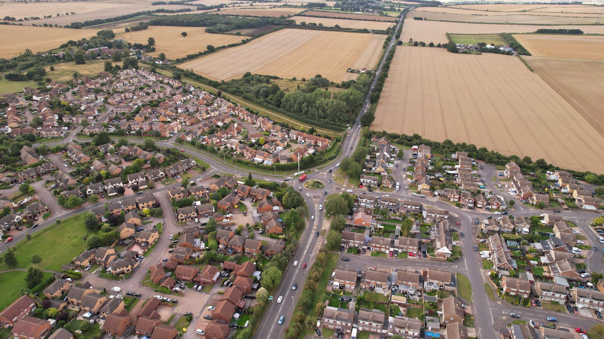

Quick answer: A good town house design in Sydney works within a narrow lot — typically 6–8.5m wide — while still delivering cross-ventilation, separated living and bedroom zones, and a private outdoor courtyard. Construction costs in 2026 run $2,800–$4,200 per m², and most developments of three or more dwellings need a full Development Application rather than Complying Development. Popular 2026 styles favour warm minimalism, dark brick or render facades, and light wells over generic project-home elevations.
Every townhouse rendering ever published looks like a dating profile photo — flattering angle, golden-hour light, and a fairly generous interpretation of what you actually end up with. [Serious mode engaged.] Here is what good town house design in Sydney actually involves in 2026: the layouts that work on narrow lots, the styles buyers are asking for, what it costs per square metre, and the planning detail most design galleries skip entirely — how the title and the approval pathway shape the design before a single wall goes up.
- What makes a good townhouse design
- Popular townhouse styles in Sydney for 2026
- Layout and floor plan considerations
- Indoor-outdoor living and courtyards
- What townhouse designs cost to build
- NSW planning rules for multi-dwelling housing
- Torrens title vs strata: how it shapes the design
- When a townhouse design is the wrong fit
- Questions to ask your designer or builder
- FAQ
What Makes a Good Townhouse Design
A townhouse shares at least one wall with its neighbour. That single fact drives almost every other decision in the design — where the light comes from, where the stairs go, and how privacy gets manufactured on a block that is, by definition, narrower than a standalone home's.
The best townhouse designs treat the shared wall as a constraint to design around, not an excuse to default to a long, dark corridor with rooms bolted on either side. Cross-ventilation between the front and rear of the block, a light well or void over the stairs, and a living zone that opens to a private outdoor space are the difference between a townhouse that feels generous and one that feels like a hallway with a kitchen in it.
"Townhouse" and "duplex" get used interchangeably in casual conversation — they are not the same thing, and the distinction matters for design and for title. A duplex is two dwellings, almost always side by side. A townhouse development usually means three or more attached dwellings, often in a row, which changes the site planning, the common property, and frequently the title structure too.
Popular Townhouse Styles in Sydney for 2026

Photo via Pexels
Project-home elevations — a rendered brick base, a render upper storey, a token portico — are losing ground in 2026. What buyers are asking for instead:
- Warm minimalism: simple geometric forms, a restrained material palette, and texture doing the work that ornamentation used to do.
- Dark brick and charred timber facades: a move away from the pale render that dominated the last decade, with deeper tones used to anchor the street presence.
- Light wells and high stair voids: a direct response to the narrow-lot problem — bringing daylight into the centre of a deep plan without relying on the front and rear windows alone.
- Integrated, not bolted-on, sustainability features: solar, batteries, and electrification designed into the roof form and services from the start, rather than added afterward.
The common thread is restraint. A facade that tries to do everything — gables, render bands, exposed beams, a feature stone clad letterbox — reads as busy from the street and dates within a decade. The townhouse rows that age well tend to be the quiet ones.
Layout and Floor Plan Considerations
"Open-plan" has been the default brief for fifteen years. It still works, with one caveat that applies specifically to narrow lots: an open kitchen, living, and dining space that runs the full width of a 6m-wide townhouse can leave no wall for storage, no acoustic separation, and nowhere quiet for the person who works from home.
What tends to work better on a typical Sydney townhouse footprint:
- Ground floor: open living, dining, and kitchen at the rear opening to a courtyard, with a separate study, powder room, and garage toward the street.
- First floor: bedrooms positioned away from the party wall where possible, with the main bedroom orientated to capture northern light rather than the street view.
- Stair placement against the party wall, freeing the opposite wall for a run of windows or a light well.
- Storage built into the stair void and under-stair space — townhouses lose more usable floor area to circulation than standalone homes, and storage is usually the first casualty.
Average townhouse width across Sydney developments sits around 6–8m. Below 6m, garage placement starts dictating the entire ground floor plan rather than sitting quietly to one side of it.
Indoor-Outdoor Living and Courtyards

Photo via Pexels
A backyard is not part of the brief on most townhouse blocks. A courtyard is, and the difference in how it is handled separates a design that feels considered from one that feels like an afterthought.
A rear courtyard of 15–25m², fully enclosed by fencing and screened from the neighbouring unit, does more for a townhouse's livability than another square metre of internal floor area. Sliding or bifold doors connecting the living space to the courtyard extend the usable footprint on the days it matters — which, in Sydney, is most of them.
A second-storey balcony off the main bedroom or a void terrace facing north adds outdoor space without consuming ground-floor area, and it is one of the more cost-effective additions in a townhouse brief relative to what it adds to the eventual resale appeal.
What Townhouse Designs Cost to Build in Sydney
Construction costs for townhouse developments in Sydney in 2026:
| Specification | Cost per m² (construction only) |
|---|---|
| Standard mid-spec | $2,800 – $3,400 |
| Well-specified, architect-designed | $3,400 – $4,200 |
| High-spec, premium finishes | $4,200 – $5,500+ |
A typical 180m² townhouse runs $500,000–$760,000 in construction cost alone. For a row of three or four, multiply per unit and add the costs that apply once across the whole site rather than per dwelling: shared driveway and common property works, stormwater detention, retaining walls, and the strata or community title registration if the development is subdivided that way.
Architect or building designer fees for a multi-unit townhouse project typically run $80,000–$180,000 depending on the number of dwellings and the level of customisation per unit. Identical, mirrored, or near-identical units reduce design fees considerably compared with four genuinely different floor plans on one site.
NSW Planning Rules for Multi-Dwelling Housing

Photo via Pexels
This is the section most design galleries skip entirely, because it is not photogenic. It is also the part that decides whether your townhouse design ever gets built.
Townhouses fall under the planning category of multi-dwelling housing in most NSW Local Environmental Plans. Whether your block can support it depends on zoning — typically R2 Low Density permits only dual occupancy, while R3 Medium Density and R4 High Density zones open the door to townhouse and multi-dwelling development — plus minimum lot size per dwelling, floor space ratio, deep soil and landscaped area requirements, and car parking ratios.
Most townhouse developments of three or more dwellings require a full Development Application assessed by council, because multi-dwelling housing rarely satisfies the numerical standards needed for a Complying Development Certificate. Council DA timelines vary considerably by LGA — from a few months in some areas to closer to a year in others — so confirming your site's zoning and the likely pathway on the NSW Planning Portal before you commission a design saves a great deal of redrawing later.
Some LGAs have also adopted low and mid-rise housing reforms that affect townhouse approvals near transport and town centres — another reason to confirm the current rules for your specific site rather than relying on what applied two years ago.
Torrens Title vs Strata: How It Shapes the Design
How the finished townhouses will be titled is a planning decision, not an afterthought you bolt on after construction. It also affects the design itself.
Two-dwelling developments are commonly subdivided under Torrens title, giving each owner a separate, freestanding title with no shared ownership of common property. This generally favours simpler boundary lines and independent services for each dwelling.
Developments of three or more attached townhouses are usually titled as strata or community title, with an owners corporation responsible for shared driveways, fencing, and common landscaped areas. This affects the design brief directly — shared services need clear, accessible meter and pit locations, and common property boundaries need to be considered from the earliest site plan, not added retrospectively before registration.
Get a town planner or solicitor to confirm the intended title structure before the design is finalised. Changing it after documentation is well underway is expensive and slow, in roughly that order.
When a Townhouse Design Is the Wrong Fit
This is the section most guides leave out. We are not most guides.
Skip the townhouse format if your block is under 12m wide and you only want one dwelling on it — a standard single-residence design will give you a more generous, less compromised home for the same money. Townhouse efficiency only pays off when you are dividing the site across multiple dwellings.
Skip it if you plan to live in the property long-term and privacy from a shared wall is a genuine dealbreaker for you. Good acoustic detailing narrows the gap, but a townhouse will never be as private as a freestanding home on the same land.
Skip it if your budget cannot absorb a full DA process. If the timeline and cost of council assessment for multi-dwelling housing does not suit your situation, a duplex on a Complying Development pathway, or a single dwelling, may get you to a usable outcome faster.
Questions to Ask Your Townhouse Designer or Builder
Ask these before the floor plan gets attached to a price you've already started liking.
- What is the realistic minimum lot width for the layout you're proposing? If the answer is vaguer than a number in metres, that is itself an answer.
- Have you confirmed the zoning and likely DA or CDC pathway for this specific site? Generic answers about "similar sites" are not the same as a confirmed pathway for yours.
- How will the development be titled, and does the design account for that now? Strata-ready common property planning is harder to retrofit than to design in from the start.
- What is the actual build cost per m² for this specification, and what's excluded? Demolition, council contributions, and shared site works are common omissions from headline figures.
- Can I see a completed townhouse project of comparable scale, and speak with the owners corporation if one exists? A finished, occupied development tells you more than any render.
- Who manages the DA process and consultant coordination — you, or am I assembling the team? This single answer determines how much of the next 18 months is actually your job.
FAQ
What is a townhouse design exactly?
A townhouse is an attached, multi-level dwelling that shares one or more walls with a neighbouring unit but holds its own title and street entry. Townhouse design refers to how that home is laid out on a narrow lot — typically 6–8.5m wide — to deliver light, privacy, and outdoor space despite the shared walls.
How wide does a block need to be for a townhouse?
Most NSW councils set a minimum lot width of 6–7m per townhouse under the relevant DCP, though this varies by LGA and zoning. A 6m-wide townhouse design works, but anything under 6.5m starts to compromise garage placement, stair location, and natural light to the centre of the plan.
How much does it cost to build a townhouse in Sydney in 2026?
Construction costs for a well-specified townhouse in Sydney run $2,800–$4,200 per m² in 2026, depending on finish level and site complexity. A typical 180m² townhouse comes in at $500,000–$760,000 in build cost alone, before land, design, council contributions, and shared site works.
What's the difference between a duplex and a townhouse?
A duplex is two attached dwellings on one lot, almost always side by side, usually sold under Torrens title as two separate properties. A townhouse development typically means three or more attached dwellings, often in a row, and is more likely to be titled as strata or community title with shared common property. See our guide to duplex builders in Sydney for a closer look at that format.
Do townhouses in NSW need a Development Application?
Most townhouse developments of three or more dwellings require a full Development Application assessed by council, because multi-dwelling housing rarely meets the numerical standards for Complying Development. Some two-dwelling proposals on suitable lots can qualify for a faster Complying Development Certificate pathway instead.
How many townhouses can I build on one block in Sydney?
It depends on lot size, zoning, and the minimum lot size per dwelling set by your council's LEP. An R3 Medium Density block of 800–1,000m² might support three to four townhouses once setbacks, deep soil zones, and parking ratios are applied. A town planner can model this before you commit to a design.
Do townhouses need to be on strata title?
Not always. Two-dwelling developments are commonly subdivided under Torrens title, giving each owner a separate, freestanding title. Developments of three or more attached dwellings are usually titled as strata or community title, with an owners corporation managing shared driveways, fencing, and common property.
Choosing the right designer or builder for a multi-dwelling project matters more than for a single home, simply because the planning and title decisions compound across every unit. Our guide on how to choose a custom home builder covers the verification steps worth doing regardless of how many dwellings you're building, and you can confirm any builder's current licence on the NSW Fair Trading register before signing anything. If you'd rather see finished work than read about it, our portfolio includes recent multi-dwelling projects across Sydney, and our services page outlines how we run the design and DA process end to end.